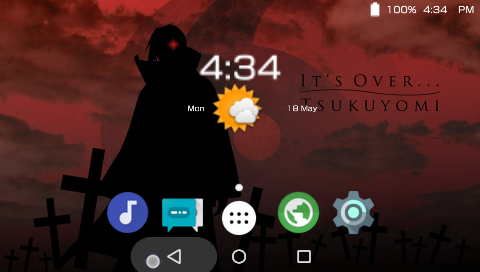
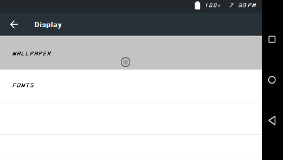
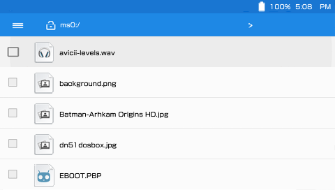
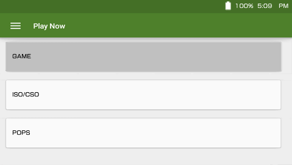

Welcome to CyanogenPSP
You're probably here because you've seen my project appear on my YouTube channel or my Google+, or one of the PSP hacking scene sites where I'd normally hang out. I've been maintaining this project for a year a few months now and by that, you should be able to conculde that I am an Android Enthusiast. My aim here is not to provide something that's way beyond the PSP's limitations, but to provide an altervative to a modernized UI design. This project pretty much lets you do anything a regular PSP with Custom Firmware would do, along with some nifty features all built-in one package. Below you will see the main features of this project.
Beautifully Revamped Homescreen
You're here cause you're probably tired of using the XMB, and you want expereince a new UI. It's time to dust of your PSP, and complement it with Android's latest and greatest design - The Android Lollipop UI. This UI mimics the lollipop design head to toe, without missing one pixel of detail. It also offers an app drawer which can be openned by pressing the app drawer button, which then gives you access to more apps and features.
Customize to your extent
From changing your wallpaper to using your own custom font! CyanogenPSP slightly mocks the well-known theme manager in CyanogenMod, by offering its minimal cutomization. You can toggle the gameboot, the boot animation, the day/night widget, and even one of android's well known features - the expanded desktop. While it doesn't do exactly what the Android's well known custom rom feature does, it offers its "PSP version" that behaves and acts pretty much the same.
Manage your files
There isn't much to explain here, because it pretty much explains its self. CyanogenPSP's file manager lets you open and view sub folders, play your music files (MP3, BGM, WAV, AT3 and MOD files), open and view pictures (JPG, PNG and GIF). It also lets you create folders, and delte folders/files. While the Game launcher lets you launch games, the file manager also has this built in.
Play Music
There isn't much to explain here, because it pretty much explains its self. CyanogenPSP's file manager lets you open and view sub folders, play your music files (MP3, BGM, WAV, AT3 and MOD files), open and view pictures (JPG, PNG and GIF). It also lets you create folders, and delte folders/files. While the Game launcher lets you launch games, the file manager also has this built in.
In the end it's just a PSP
This isn't some high end mobile device running android, it's just a PSP homebrew designed to look like it. While it offers a bunch of features in contrast to the XMB, in the end it lets you keep your PSP's main reason - to game. Launch your UMD backups, or PSN content (whether it be minis or PS1 classics) via the game launcher without any problems. Run your game plugins, homebews and emulators just as if you were running it on a Custom Firmware